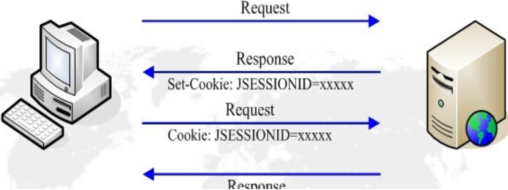
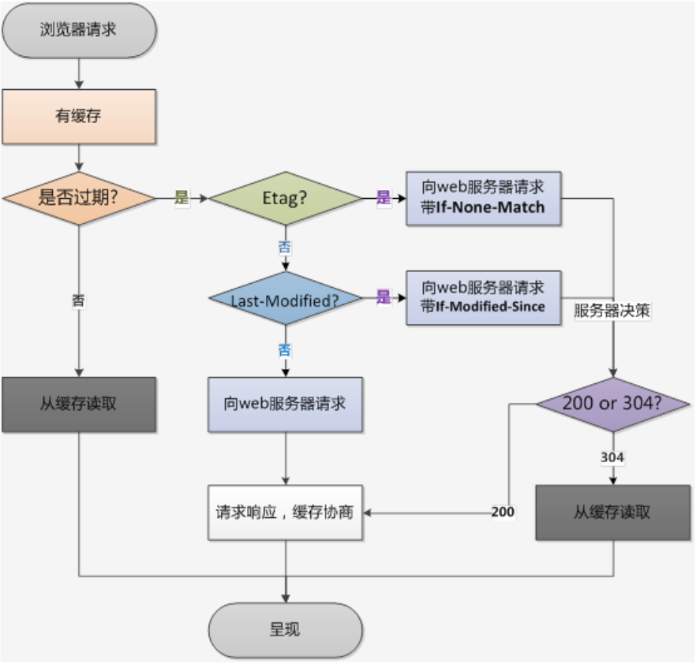
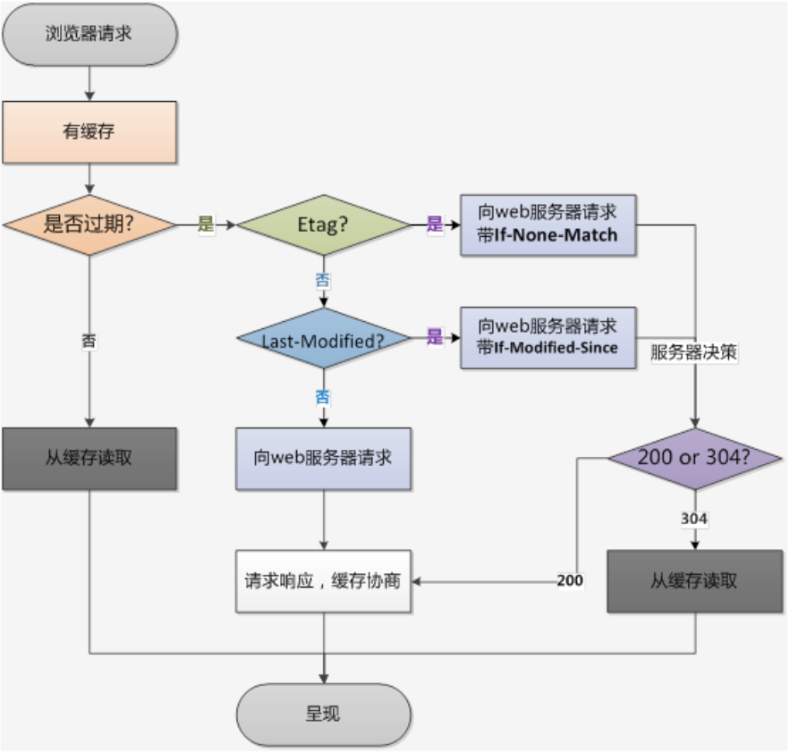

# HTTP
# HTTP 协议详解
# 浏览器行为与HTTP协议
处理流程：
- 1、输入网址并回车
- 2、解析域名
- 3、浏览器发送HTTP请求
- 4、服务器处理请求
- 5、服务器返回HTML响应
- 6、浏览器处理HTML页面
- 7、继续请求其他资源
# 什么是HTTP协议
- HTTP是超文本传输协议，从 www 浏览器传输到本地浏览器的一种传输协议，网站是基于HTTP协议的，例如网站的图片、css、js等都是基于HTTP协议进行传输的。
- HTTP协议是由从客户机到服务器的请求（Request）和从服务器到客户机的响应（response）进行约束和规范。
# 了解TCP/IP协议栈
- 应用层
- 为用户提供所需要的各种服务，例如：HTTP，FTP，DNS，SMTP等
- 传输层
- 为应用层实体提供端到端的通信功能，保证数据包的顺序传送及数据的完整性。
- 该层定义了两个主要的协议：传输控制协议（TCP）和用户数据报协议（UDP）。
- 网络层
- 主要解决主机到主机的通信问题。IP协议是国际互联层最重要的协议。
- 网络接口层
- 负责监视数据在主机和网络之间的交换。 在TCP/IP协议栈中的位置
- 目前普遍应用版本HTTP 1.1
- 正在逐步向HTTP 2迁移
- HTTP默认端口号为80
- HTTPS默认端口号为443
# HTTP工作过程
事务：一个操作分为一个或几个步骤，每个步骤都有严格的顺序去执行，在任何一个步骤上错误，这个操作就是失败。
一次HTTP操作称为一个事务，其工作过程可分为四步：
- 1)首先客户机与服务器需要建立连接。只要单击某个超级链接，HTTP的工作开始。
- 2)建立连接后，客户机发送一个请求给服务器，请求方式的格式为：统一资源标识符(URL)、协议版本号，后边是MIME信息包括请求修饰符、客户机信息和可能的内容。
- 3)服务器接到请求后，给予相应的响应信息，其格式为一个状态行，包括信息的协议版本号、一个成功或错误的代码，后边是MIME信息包括服务器信息、实体信息和可能的内容。
- 4)客户端接收服务器所返回的信息通过浏览器显示在用户的显示屏上，然后客户机与服务器断开连接。
- 如果在以上过程中的某一步出现错误，那么产生错误的信息将返回到客户端，有显示屏输出。对于用户来说，这些过程是由HTTP自己完成的，用户只要用鼠标点击，等待信息显示就可以了。
# 请求与响应
- HTTP请求组成：请求行、消息报头、请求正文。
- HTTP响应组成：状态行、消息报头、响应正文。
- 请求行组成：以一个方法符号开头，后面跟着请求的URI和协议的版本。
- 状态行组成：服务器HTTP协议的版本，服务器发回的响应状态代码和状态代码的文本描述。
# 请求方法
- GET： 请求获取Request-URI所标识的资源
- POST： 在Request-URI所标识的资源后附加新的数据
- HEAD： 请求获取由Request-URI所标识的资源的响应消息报头
- PUT： 请求服务器存储一个资源，并用Request-URI作为其标识
- DELETE： 请求服务器删除Request-URI所标识的资源
- TRACE： 请求服务器回送收到的请求信息，主要用于测试或诊断CONNECT：HTTP/1.1协议中预留给能够将连接改为管道方式的代理服务器。OPTIONS： 请求查询服务器的性能，或者查询与资源相关的选项和需求
# HTTP状态码
- 状态代码有三位数字组成，第一个数字定义了响应的类别，且有五种可能取值：
- 1xx：指示信息--表示请求已接收，继续处理
- 2xx：成功--表示请求已被成功接收、理解、接受
- 3xx：重定向--要完成请求必须进行更进一步的操作
- 4xx：客户端错误--请求有语法错误或请求无法实现
- 5xx：服务器端错误--服务器未能实现合法的请求
# 常用的响应报头
- Location 响应报头域用于重定向接受者到一个新的位置。Location响应报头域常用在更换域名的时候。
- Server 响应报头域包含了服务器用来处理请求的软件信息。与UserAgent请求报头域是相对应的。
- WWW-Authenticate 响应报头域必须被包含在401（未授权的）响应消息中，客户端收到401响应消息时候，并发送Authorization报头域请求服务器对其进行验证时，服务端响应报头就包含该报头域。
实体报头 请求和响应消息都可以传送一个实体。一个实体由实体报头域和实体正文组成，但并不是说实体报头域和实体正文要在一起发送，可以只发送实体报头域。实体报头定义了关于实体正文（eg：有无实体正文）和请求所标识的资源的元信息。
# 常用的实体报头
- Content-Encoding 实体报头域被用作媒体类型的修饰符，它的值指示了已经被应用到实体正文的附加内容的编码，因而要获得Content-Type报头域中所引用的媒体类型，必须采用相应的解码机制。
- Content-Language 实体报头域描述了资源所用的自然语言。
- Content-Length 实体报头域用于指明实体正文的长度，以字节方式存储的十进制数字来表示。
- Content-Type 实体报头域用语指明发送给接收者的实体正文的媒体类型。
- Last-Modified 实体报头域用于指示资源的最后修改日期和时间。
- Expires 实体报头域给出响应过期的日期和时间。
# Cookies与Session
- Cookies是保存在客户端的小段文本，随客户端点每一个请求发送该url下的所有cookies到服务器端。
- Session则保存在服务器端，通过唯一的值sessionID来区别每一个用户。SessionID随每个连接请求发送到服务器，服务器根据sessionID来识别客户端，再通过session 的key获取session值。
# Cookie使用
- 与Cookie相关的HTTP扩展头
- 1)Cookie：客户端将服务器设置的Cookie返回到服务器;
- 2)Set-Cookie：服务器向客户端设置Cookie;
- 服务器在响应消息中用Set-Cookie头将Cookie的内容回送给客户端，客户端在新的请求中将相同的内容携带在Cookie头中发送给服务器。从而实现会话的保持。
# Session的使用
- 使用Cookie来实现
- 使用URL回显来实现 
# HTTP缓存机制
- 缓存会根据请求保存输出内容的副本，例如html页面，图片，文件，当下一个请求来到的时候：如果是相同的URL，缓存直接使用副本响应访问请求，而不是向源服务器再次发送请求。
- 缓存的优点：减少相应延迟,减少网络带宽消耗.
# 浏览器缓存机制
 

# 了解两种缓存策略
- 强制缓存与对比缓存
- 强制缓存，服务器通知浏览器一个缓存时间，在缓存时间内，下次请求，直接用缓存，不在时间内，执行比较缓存策略。
- 比较缓存，将缓存信息中的Etag和Last-Modified通过请求发送给服务器，由服务器校验，返回304状态码时，浏览器直接使用缓存。
- Etag/If-None-Match策略
- Last-Modified/If-Modified-Since策略
比较缓存
url、新窗口打开、前进后退，这三种情况下两种缓存都生效。
F5刷新，直接走比较缓存，不走强制缓存。
强制清缓存 ，两种都不生效。
# 密码学入门
- 密码学的处理对象是数字和字符串。
- 散列是一种数据一旦转换为其他形式将永远无法恢复的加密技术。
- 加密
- 对称加密（AES、DES、3DES）
- 非对称加密（RSA）
- 密钥交换算法
- Diffie-Hellman算法是一种著名的密钥协商算法，这种算法可以使得信息交换的双方通过公开的非安全的网络协商生成安全的共享密钥。
- （1）Alice与Bob确定两个大素数n和g，这两个数不用保密
- （2）Alice选择另一个大随机数x，并计算A如下：A=gx mod n
- （3）Alice将A发给Bob
- （4）Bob选择另一个大随机数y，并计算B如下：B=gy mod n
- （5）Bob将B发给Alice
- （6）计算秘密密钥K1如下：K1=Bx mod n
- （7）计算秘密密钥K2如下：K2=Ay mod n
- K1=K2，因此Alice和Bob可以用其进行加解密
# 证书签发机构（CA）
通过CA发放的证书完成密钥的交换，实际上是利用非对称的加密算法完成数据加密密钥的安全交换，然后再利用数据加密密钥完成数据的安全交换。
数字证书：数字证书是互联网通信中标识双方身份信息的数字文件，由CA签发。
CA：CA（certification authority）是数字证书的签发机构。作为权威机构，其审核申请者身份后签发数字证书，这样我们只需要校验数字证书即可确定对方的真实身份。
CA的工作流程
- 1.服务器 example.com将从CA请求TLS证书，例如 Digicert。
- 2.Digicert将为example.com创建证书，证书将包含必要的数据，例如服务器名称，服务器的公钥等。
- 3.Digicert将创建数据（证书）的哈希值，并使用自己的私钥对其进行加密。
- 4.浏览器和操作系统自带Digicert等权威机构的公钥。
- 5.当浏览器收到签名证书时，它将使用公钥从签名生成哈希值，它还将使用证书中指定的散列算法生成数据（证书）的散列，如果两个哈希值匹配，则签名验证成功并且证书是可信的。
- 6.现在浏览器可以使用证书中指定的example.com的公钥继续进行身份验证过程。
- 在这里，我们可以将Digicert称为 Root CA。 浏览器如何验证服务器证书的有效性
证书颁发机构是为服务器创建并签署证书，很少有组织从事这项工作，即Digicert，Geotrust，Comodo等。如果他们正在为所有服务器签署证书，则必须为所有签名使用相同的私钥，如果它被盗，那么所有的信任都会丢失。为了解决这个问题并增加更多的平均信息量，引入了中间CA(intermediate CA)的概念。
服务器使用中级证书颁发机构的签名，因此，在与浏览器通信时，服务器将共享两个证书：
- 1、包含服务器的公钥，即实际的服务器证书；
- 2、由 Root CA 颁发的 intermediate CA 证书。
在签名验证期间，浏览器首先使用已经存储在浏览器中的Root CA的公钥来验证中间证书的数字签名，如果成功，浏览器现在可以信任中间证书及其公钥。现在使用此公钥，浏览器将验证原始服务器证书的签名，该组织可以注册为intermediate CA，以便为其域签署证书。
# SSL/TLS协议
- 传输层安全性协议（Transport Layer Security - TLS），及其前身安全套接层（SecureSockets Layer - SSL）是一种安全协议，目的是为互联网通信提供安全及数据完整性保障。
- HTTPS协议的安全性由SSL协议实现，当前使用的TLS协议 1.2 版本包含了四个核心子协议：握手协议、密钥配置切换协议、应用数据协议及报警协议。
- TLS适用于对称密钥
- 对称密钥可以通过安全密钥交换算法共享
- 如果请求被截获，密钥交换可能会被欺骗
- 使用数字签名进行身份验证证书颁发机构和信任链。
- HTTPS协议、SSL协议、TLS协议、握手协议的关系
- HTTPS是Hypertext Transfer Protocol over Secure Socket Layer的缩写，即HTTPover SSL，可理解为基于SSL的HTTP协议。HTTPS协议安全是由SSL协议实现的。
- SSL协议是一种记录协议，扩展性良好，可以很方便的添加子协议
- 握手协议是SSL协议的一个子协议。
- TLS协议是SSL协议的后续版本，本文中涉及的SSL协议默认是TLS协议1.2版本。
# HTTPS协议分析
- TLS 握手的步骤：
- ClientHello：客户端发送所支持的 SSL/TLS 最高协议版本号和所支持的加密算法集合及压缩方法集合等信息给服务器端。
- ServerHello：服务器端收到客户端信息后，选定双方都能够支持的 SSL/TLS 协议版本和加密方法及压缩方法，返回给客户端。
- SendCertificate（可选）：服务器端发送服务端证书给客户端。
- RequestCertificate（可选）：如果选择双向验证，服务器端向客户端请求客户端证书。
- ServerHelloDone：服务器端通知客户端初始协商结束。
- ResponseCertificate（可选）：如果选择双向验证，客户端向服务器端发送客户端证书。
- ClientKeyExchange：客户端使用服务器端的公钥，对客户端公钥和密钥种子进行加密，再发送给服务器端。
- CertificateVerify（可选）：如果选择双向验证，客户端用本地私钥生成数字签名，并发送给服务器端，让其通过收到的客户端公钥进行身份验证。
- CreateSecretKey：通讯双方基于密钥种子等信息生成通讯密钥。
- ChangeCipherSpec：客户端通知服务器端已将通讯方式切换到加密模式。
- Finished：客户端做好加密通讯的准备。
- ChangeCipherSpec：服务器端通知客户端已将通讯方式切换到加密模式。
- Finished：服务器做好加密通讯的准备。
- Encrypted/DecryptedData：双方使用客户端密钥，通过对称加密算法对通讯内容进行加密。
- ClosedConnection：通讯结束后，任何一方发出断开 SSL 连接的消息。
# HTTP 2协议分析
- HTTP/2 没有改动 HTTP 的应用语义。 HTTP 方法、状态代码、URI 和标头字段等核心概念一如往常。
- HTTP/2 修改了数据格式化（分帧）以及在客户端与服务器间传输的方式。这两点统帅全局，通过新的分帧层向我们的应用隐藏了所有复杂性。
- 由于HTTP/2 引入了一个新的二进制分帧层，该层无法与之前的 HTTP/1.x 服务器和客户端向后兼容，因此协议的主版本提升到 HTTP/2。
- HTTP2的特点：
- 使用二进制格式传输，更高效、更紧凑。
- 对报头压缩，降低开销。
- 多路复用，一个网络连接实现并行请求。
- 服务器主动推送，减少请求的延迟
- 默认使用加密
# HTTP 2：二进制分帧层
- HTTP/2 所有性能增强的核心在于新的二进制分帧层，它定义了如何封装 HTTP 消息并在客户端与服务器之间传输。
- 这里所谓的“层”指的是位于套接字接口与应用可见的高级 HTTP API 之间一个经过优化的新编码机制。
- HTTP/1.x 协议以换行符作为纯文本的分隔符，而HTTP/2 将所有传输的信息分割为更小的消息和帧，并采用二进制格式对它们编码。
- 客户端和服务器会替我们完成必要的分帧工作。
# HTTP 2：多路复用
- 在 HTTP/1.x 中，如果客户端要想发起多个并行请求以提升性能，则必须使用多个 TCP 连接。这种模型也会导致队首阻塞，从而造成底层 TCP 连接的效率低下。
- 将 HTTP 消息分解为独立的帧，交错发送，然后在另一端重新组装是 HTTP2 最重要的一项增强。这个机制会在整个网络技术栈中引发一系列连锁反应，从而带来巨大的性能提升。
- 并行交错地发送多个请求，请求之间互不影响。
- 并行交错地发送多个响应，响应之间互不干扰。
- 使用一个连接并行发送多个请求和响应。
- 不必再为绕过 HTTP/1.x 限制而做很多工作
- 消除不必要的延迟和提高现有网络容量的利用率，从而减少页面加载时间。
# HTTP 2：服务器推送
- HTTP/2 新增的另一个强大的新功能是，服务器可以对一个客户端请求发送多个响应。 换句话说，除了对最初请求的响应外，服务器还可以向客户端推送额外资源，而无需客户端明确地请求。
- HTTP/2 打破了严格的请求-响应语义，支持一对多和服务器发起的推送工作流
- 服务器已经知道客户端下一步要请求什么资源，这时候服务器推送即可派上用场。
- 推送资源可以进行以下处理：
- 由客户端缓存
- 在不同页面之间重用
- 与其他资源一起复用
- 由服务器设定优先级
- 被客户端拒绝
# HTTP2的伪头字段
- 伪头部字段是http2内置的几个特殊的以”:”开始的key，用于替代HTTP/1.x中请求行/响应行中的信息，比如请求方法，响应状态码等:
- method 目标URL模式部分（请求）
- :scheme 目标URL模式部分（请求）
- :authority 目标RUL认证部分（请求）
- :path 目标URL的路径和查询部分（绝对路径产生式和一个跟着"？"字符的查询产生式）。（请求）
- :status 响应头中的HTTP状态码部分（响应）
# 了解HTTP 3
- 运行在 QUIC 之上的 HTTP 协议被称为 HTTP/3（HTTP-over-QUIC）
- QUIC 协议（Quick UDP Internet Connection）基于 UDP，正是看中了UDP 的速度与效率。同时 QUIC 也整合了 TCP、TLS 和 HTTP/2 的优点，并加以优化。
- 特点：
- 减少了握手的延迟（1-RTT 或 0-RTT）
- 多路复用，并且没有 TCP 的阻塞问题
- 连接迁移，（主要是在客户端）当由 Wifi 转移到 4G 时，连接不会被断开。
- HTTP 3与HTTP 1.1和HTTP 2没有直接的关系，也不是http2的扩展
- HTTP 3将会是一个全新的WEB协议
- HTTP 3目前处于制订和测试阶段
# 队首阻塞问题
- HTTP/1.1 和 HTTP/2 都存在队头阻塞问题（Head of line blocking）
- HTTP/1.1 的队头阻塞。一个 TCP 连接同时传输 10 个请求，其中第1、2、3 个请求已被客户端接收，但第 4 个请求丢失，那么后面第 5- 10 个请求都被阻塞，需要等第 4 个请求处理完毕才能被处理，这样就浪费了带宽资源。
- HTTP/2 的多路复用虽然可以解决“请求”这个粒度的阻塞，但 HTTP/2的基础 TCP 协议本身却也存在着队头阻塞的问题。
- 由于 HTTP/2 必须使用 HTTPS，而 HTTPS 使用的 TLS 协议也存在队头阻塞问题。
- 队头阻塞会导致 HTTP/2 在更容易丢包的弱网络环境下比 HTTP/1.1更慢
- 那 QUIC 解决队头阻塞问题的的方法：
- QUIC 的传输单元是 Packet，加密单元也是 Packet，整个加密、传输、解密都基于 Packet，这样就能避免 TLS 的队头阻塞问题；
- QUIC 基于 UDP，UDP 的数据包在接收端没有处理顺序，即使中间丢失一个包，也不会阻塞整条连接，其他的资源会被正常处理。
# HTTP与反向代理
# 反向代理的用途
- 加密和SSL加速
- 负载均衡
- 缓存静态内容
- 压缩
- 减速上传
- 安全
- 外网发布